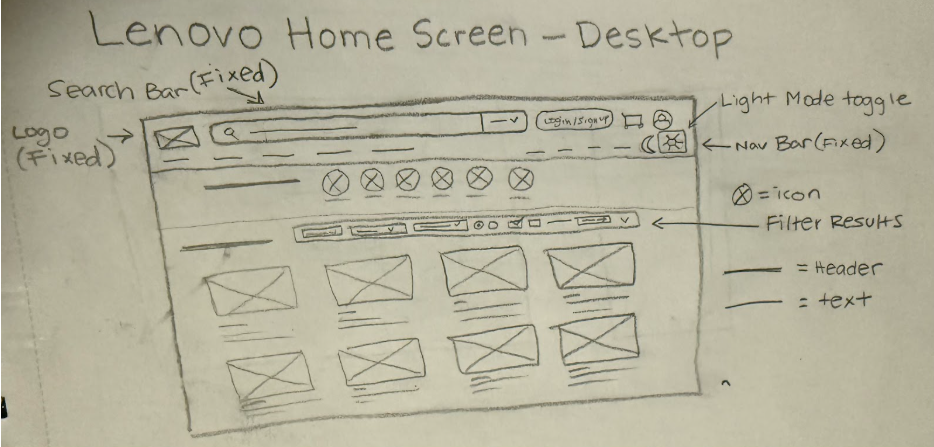
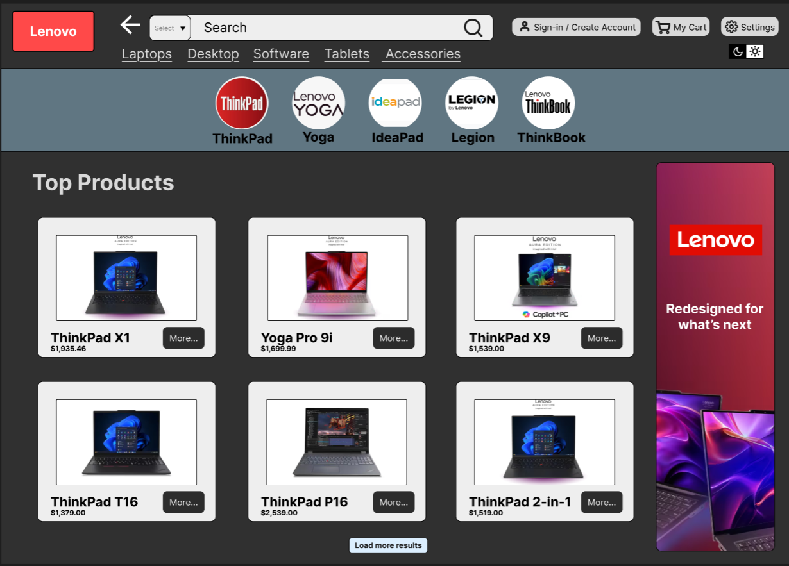
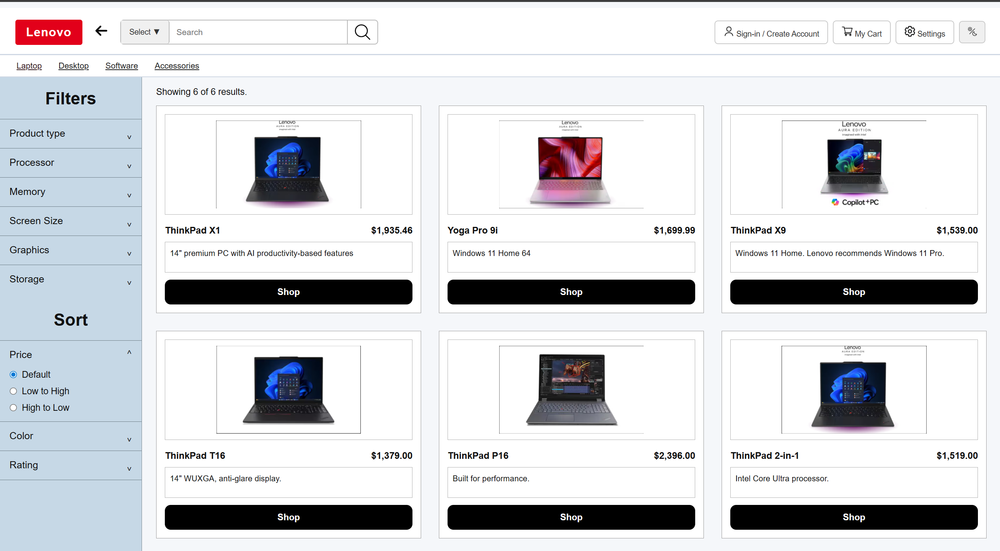
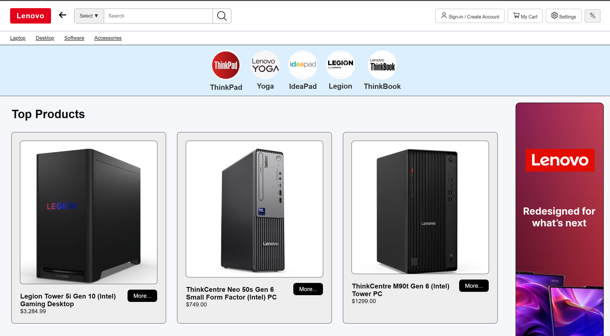
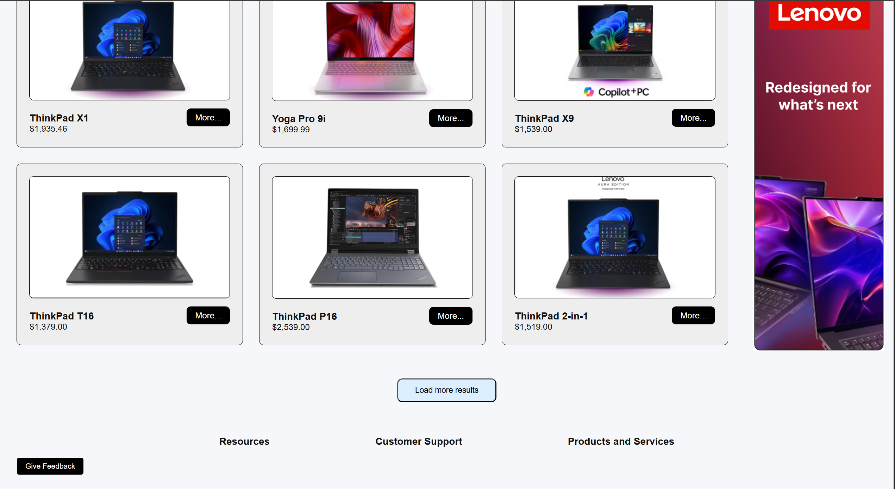

Define the problem:

The main problem with the Lenovo retail website is its confusing interface. When users first enter the site, they are immediately overwhelmed by multiple pop-ups. Then the header is cluttered with nearly 20 links, which includes many unnecessary options. As a result, it's easy for users to mistakenly click on a link and navigate to a page they didn't intend to visit in the first place.
Walk through your process:


For the first part of redesigning the Lenovo website, we created sketched wireframes to visualize how to address the issues we found in the original website. For example, we removed pop-ups and reduced visual clutter on the website.


After receiving feedback and executing a peer usability test on multiple users, we created our first wireframe design in Figma. We made sure to keep it simple by removing unnecessary features, such as a filter bar on the homepage, since there are already filters available on the search page.


When designing our final prototype for the Lenovo retail website redesign, the most common feedback we received from the wireframes was confusion regarding the circles on the homepage and their purpose. Additionally, users were uncertain about the placement of the search icon in the search bar, which made it unclear how to access the search page. From this feedback, in our final prototype, we added fewer circles and added clear images to show users why they are there, and moved the search icon to the right of the search bar so that it matched real-world expectations.


In our final redesign, we began implementing the application. This step took the longest, and we had to ensure that every button on the application worked properly. We started by using HTML to create the structure of the website, then applied CSS to style it and replicate the prototype we designed. Finally, we utilized JavaScript to make our application fully functional, just like the original website.
Show testing and outcomes:
To evaluate our design, we conducted peer usability testing on our wireframes and prototypes. During this testing, we observed how users interacted with the web flow and navigated through the webpage. From these evaluations, we received multiple comments about the placement of the feedback button. As a result, we made adjustments to its position and prioritized the most important functions at the top of the page for better user access. Another change that we made from the peer usability testing is changing the dark mode design feature by reducing it from two buttons to one, which reduces the likelihood of misclicks by users.
Before and after: Dark mode icon changes

Before and after: Feedback button placement

Present the final product:

Please click on the link below to see the final deployed version of the redesigned lenovo retail website!